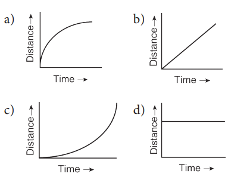
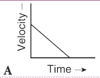
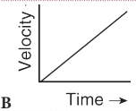
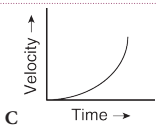
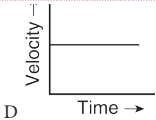
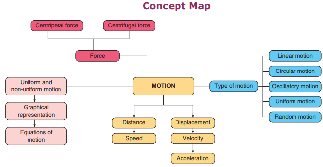

1. The area under velocity – time graph represents the
A bracket closed velocity of the moving object.
B bracket closed displacement covered by the moving object.
C bracket closed speed of the moving object.
D bracket closed acceleration of the moving object.
2. Which one of the following is most likely not a case of uniform circular motion question mark
A bracket closed Motion of the Earth around the Sun.
B bracket closed Motion of a toy train on a circular track.
C bracket closed Motion of a racing car on a circular track.
D bracket closed Motion of hours hand on the dial of the clock.
3. Which of the following graph represents uniform motion of a moving particle question mark

4. The centrifugal force is
abracket closed a real force.
bbracket closed the force of reaction of centripetal force.
cbracket closed a virtual force.
dbracket closed directed towards the centre of the circular path.
1. Speed is a dash quantity whereas velocity is a dash quantity.
2. The slope of the distance Hyphan time graph at any point gives dash
3. Negative acceleration is called dash
4. Area under velocity Hyphan time graph shows dash
1. The motion of a city bus in a heavy traffic road is an example for uniform motion.
2. Acceleration can get negative value also.
3. Distance covered by a particle never becomes zero but displacement becomes zero.
4. The velocity Hyphan time graph of a particle falling freely under gravity would be a straight line parallel to the x axis.
5. If the velocity Hyphan time graph of a particle is a straight line inclined to X-axis then its displacement Hyphan time graph will be a straight line.
Mark the correct choice as:
a. If both assertion and reason are true and reason is the correct explanation of assertion.
b. If both assertion and reason are true but reason is not the correct explanation of assertion.
c. If assertion is true but reason is false.
d. If assertion is false but reason is true.
1. Assertion: The accelerated motion of an object may be due to change in magnitude of velocity or direction or both of them.
Reason: Acceleration can be produced only by change in magnitude of the velocity. It does not depend the direction.
2. Assertion: The Speedometer of a car or a motor-cycle measures its average speed. Reason: Average velocity is equal to total displacement divided by total time taken.
3. Assertion: Displacement of a body may be zero when distance travelled by it is not zero.
Reason: The displacement is the shortest distance between initial and final position.
List 1 |
List 2 |
1. Motion of a bodycovering equaldistances in equalinterval of time |
 |
2. Motion with non uniformacceleration
|
 |
3.Constant retardation |
 |
4.Uniformacceleration |
 |
1. Define velocity.
2. Distinguish distance and displacement.
3. What do you mean by uniform motion Question mark
4. Compare speed and velocity.
5. What do you understand about negative acceleration Question mark
6. Is the uniform circular motion accelerated Question mark Give reasons for your answer.
7. What is meant by uniform circular motion Question mark Give two examples of uniform circular motion.
1. Derive the equations of motion by graphical method.
2. Explain different types of motion.
1. A ball is gently dropped from a height of 20 m. If its velocity increases uniformly at the rate of 10 m s power minus 2 with what velocity will it strike the groundquestion mark After what time will it strike the ground Question mark
2. An athlete completes one round of a circular track of diameter 200 m in 40 s. What will be the distance covered and the displacement at the end of 2 m and 20 s Question mark
3. A racing car has a uniform acceleration of 4 m s power minus 2 What distance it covers in 10 s after the start Question mark
1. Advanced Physics by: M. Nelkon and P. Parker, C.B.S publications, Chennai
2. College Physics by: R.L.Weber, K.V. Manning, Tata McGraw Hill, New Delhi.
3. Principles of Physics Bracket OPENExtendedbracket closed - Halliday, Resnick and Walker, Wiley publication, New Delhi.
http://www.ducksters.com/science/physics/ motion_glossary_and_terms.php
http://www.physicsclassroom.com/ Class/1DKin/U1L1d.cfm
http://www.physicsclassroom.com/ Class/1DKin/U1L1e.cfm
https://brilliant.org/wiki/uniform-circularmotion-easy/Centrifugal force

FORCE AND MOTION
Newton’s second law says a force acting on the object either change it’s direction or acceleration or both. F=ma This activity proves that:
Step 1. Type the following URL in the browser or scan the QR code from your mobile.You can see a wheel barrow full of load on the screen. Below that you can see two sets of people also.
Step 2. Place different number of peoples on both the side of the rope.
Click go. According to the force given by the people the wheel barrow moves to anyone of the side. If the number of people is equal on both the sides the load will not move.
Step 3. By changing the number of people you can see the force and motion.
https://phet.colorado.edu/en/simulation/forces-and-motion-basics